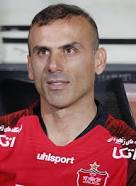

Jalal Hosseini
Iranian football player
Seyyed Jalal Hosseini, commonly known as Seyyed Jalal or Jalal Hosseini, is a former Iranian professional footballer who played as a centre-back and was the Captain of Iranian club Persepolis. Wikipedia
Born: February 3, 1982 (age 40 years), Bandar Anzali
Height: 1.82 m
Spouse: Leila Riyahi (m. 2010)
Parents: Jahan Hosseini
2022–: Persepolis (assistant)
Children: Nila Hosseini, Noura Hosseini
Siblings: Mostafa Hosseini, Jamal Hosseini, Kamal Hosseini, Reza Hosseini